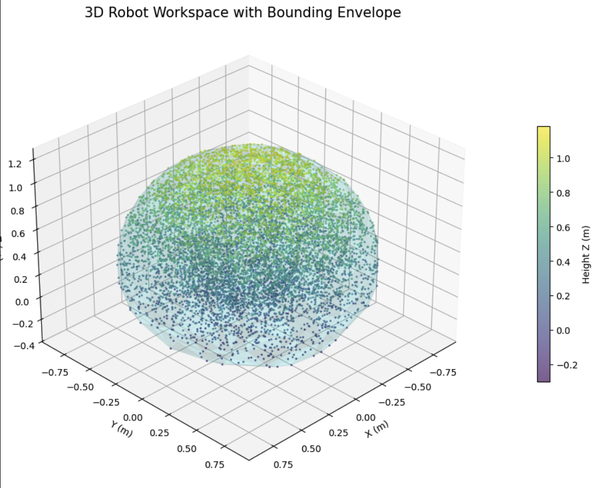
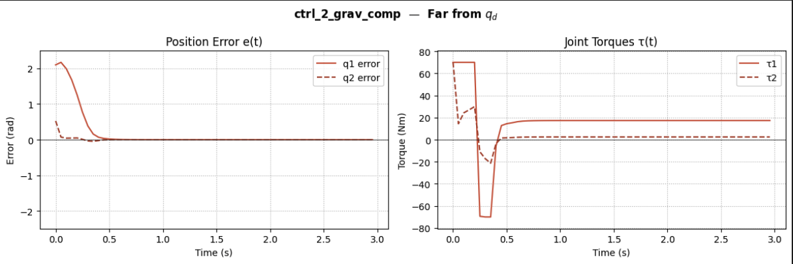

Graduate Coursework · MEC 529 / MEC 549
Key Skills
Two separate simulations built from scratch for graduate robotics coursework, implementing the theory directly in Python rather than relying on a robotics framework to do it for me: a 2-link planar arm used purely to compare feedback controllers, and a 7-DoF arm (modeled on the Franka Emika Panda) for full kinematics, trajectory generation, and workspace analysis.
A controls-only exercise on a simple 2-link planar arm: no kinematics chain or trajectory planning, just a direct comparison of feedback controllers. I implemented and compared plain PD, PD with feedforward gravity compensation, PD with desired-state gravity compensation, and PID with anti-windup, tracking both static setpoints and full paths.

A separate, larger simulation built around a 7-DoF arm (modeled on the Franka Emika Panda), covering the full pipeline from kinematics to reachability.
I built forward and inverse kinematics from a URDF model, coordinate transforms via PyTransform3D, and trajectory generation across three time-scaling profiles (trapezoidal, cubic, and s-curve) to compare velocity and acceleration behavior along the same path.
Using the same 7-DoF arm, I characterized how much of 3D space it can actually reach: Monte Carlo sampling of 10,000 random joint configurations through the forward kinematics, with a bounding envelope fit to the resulting point cloud.